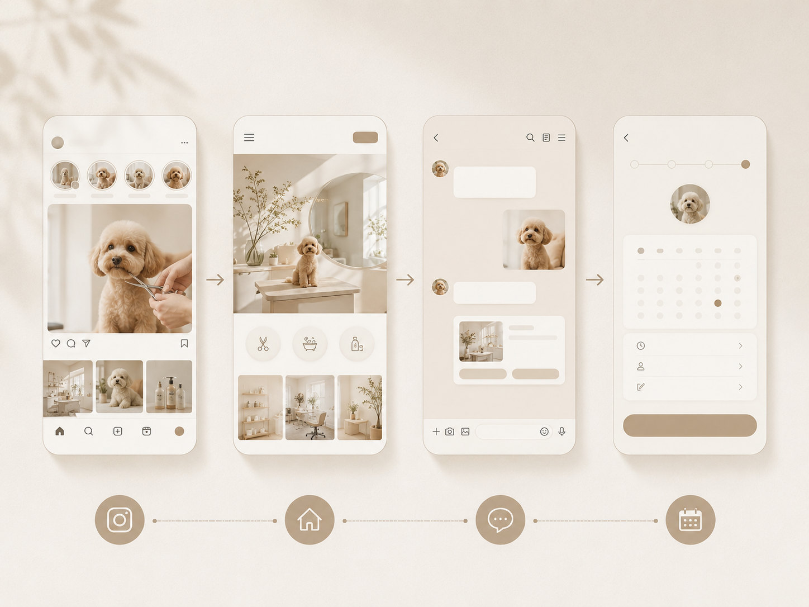
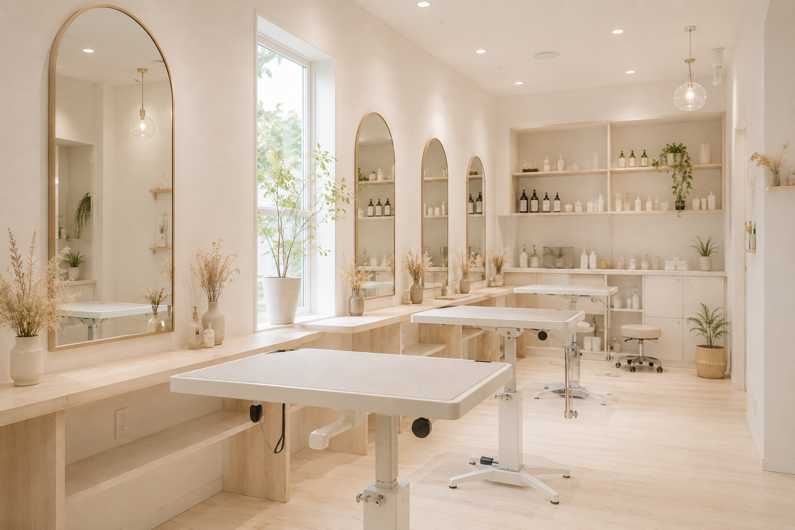
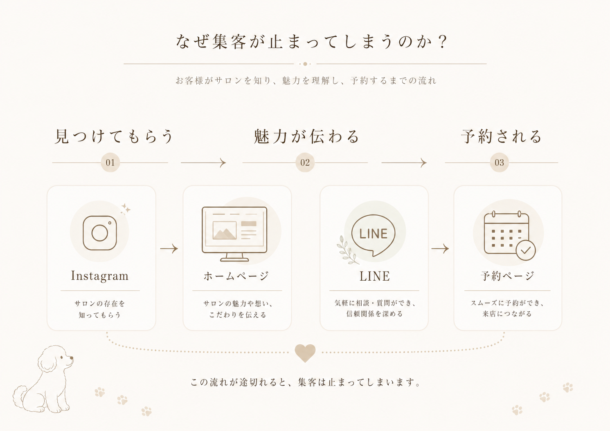
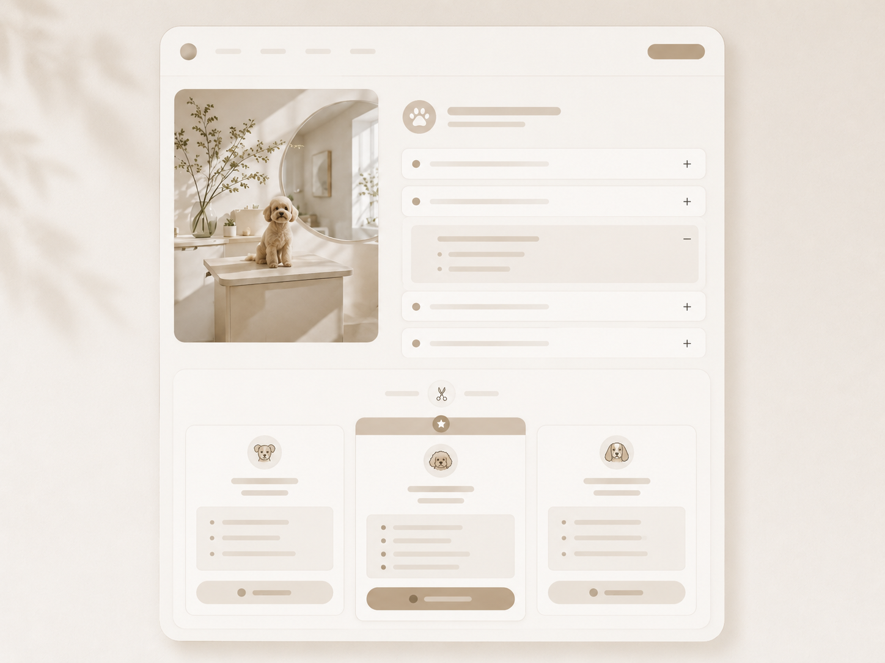
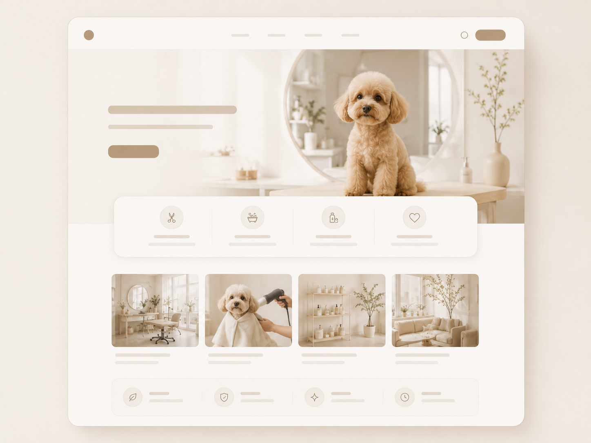
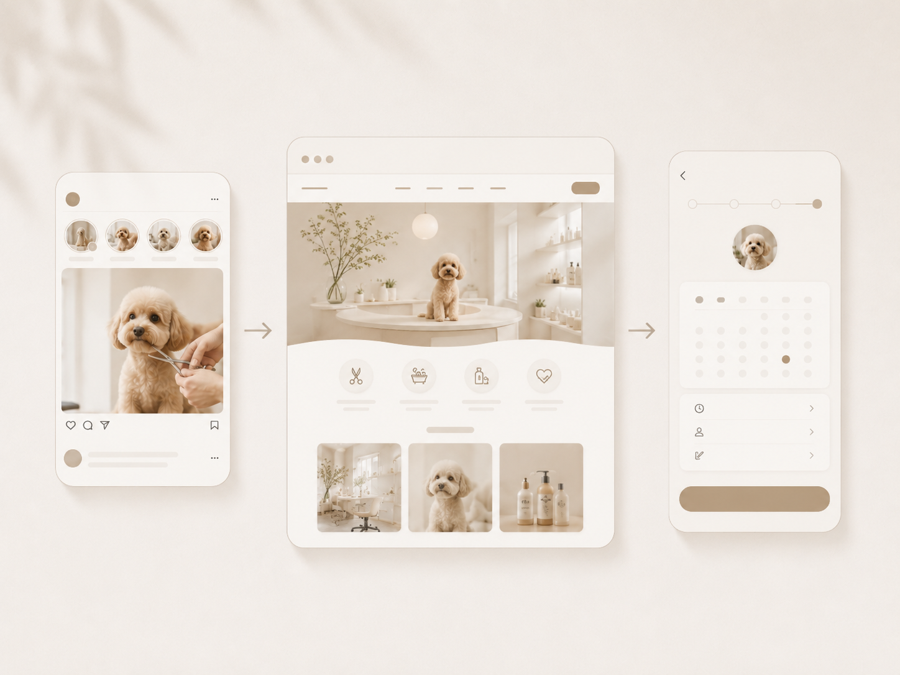
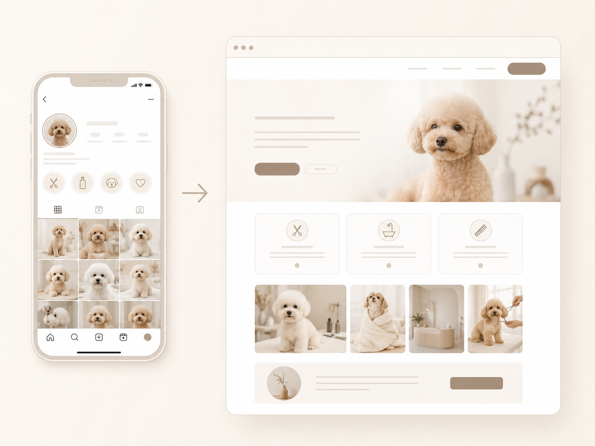
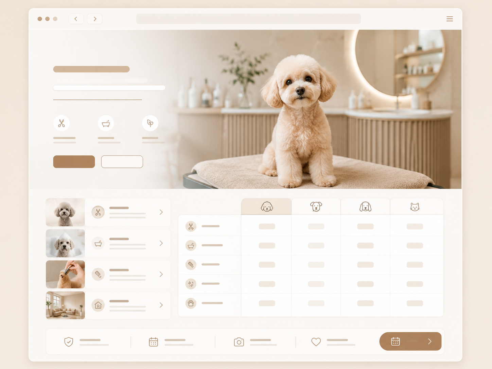
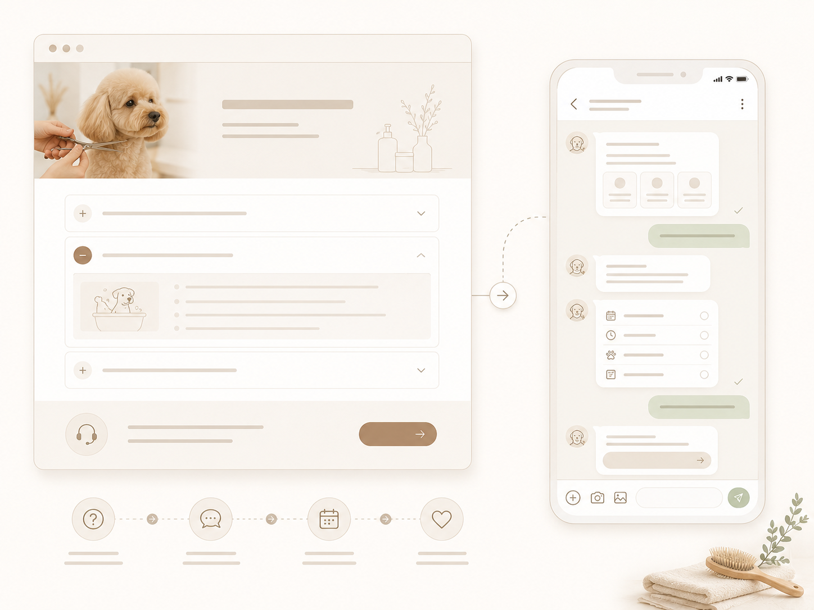
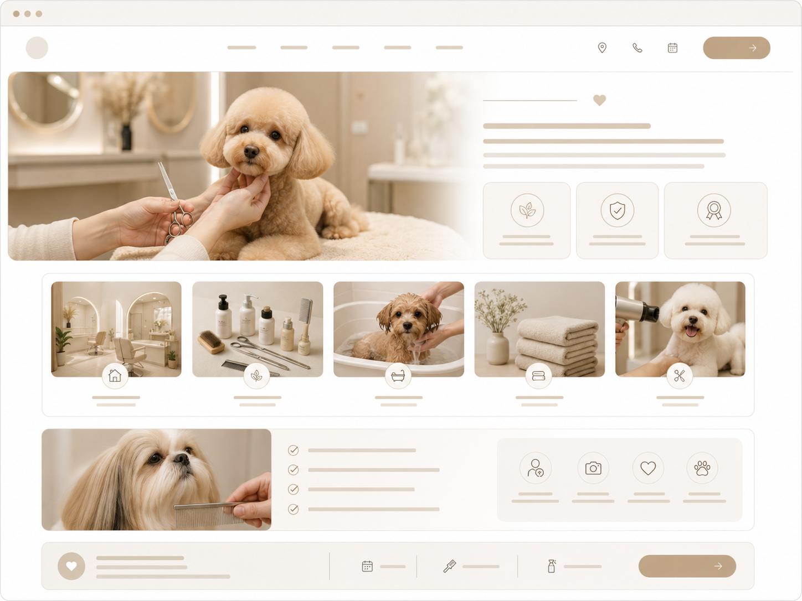

01
予約までの流れを整える
Instagram、HP、LINE、予約ページをバラバラに見せるのではなく、お客様が迷わず進める流れに整理します。
SNSもHPもあるのに予約につながらない——
多くのサロンオーナーさんが、同じところで止まっています。

投稿は続いているのに、問い合わせや予約が増えない。何が足りないのか分からない。
ページはあるものの、更新が止まっている。検索やSNSから来た人が離れていないか不安。
Instagram・HP・LINE・予約フォームのつながりがバラバラで、お客様が途中で迷ってしまう。
技術や雰囲気、接客の良さがあるのに、文章や構成の問題で「安さ・近さ」だけで選ばれてしまう。
SNSを頑張って更新していても、HPやLINE、予約ページまでの流れが分かりにくいと、お客様は途中で離れてしまいます。
大切なのは、投稿を増やすことだけではなく、見つけてもらった後に、安心して予約できる流れを整えることです。

Instagram → HP → LINE → 予約。
この流れが一本につながって初めて、「見つけてもらう」が「予約される」につながります。
頼んだ後に、お客様の動きとサロンの運営がどう変わるのか。
4つのポイントで具体的にお伝えします。


Instagram、HP、LINE、予約ページをバラバラに見せるのではなく、お客様が迷わず進める流れに整理します。

技術・雰囲気・接客・こだわりが伝わるように、サロンの強みを文章と構成に落とし込みます。

料金、施術の流れ、よくある質問を整理し、初めてのお客様でも安心して問い合わせできる状態をつくります。

ただ投稿するだけではなく、HPや予約につながる発信内容を整理します。
必要なのは、ただ綺麗なHPを作ることではありません。
サロンの雰囲気、メニュー、料金、予約方法、SNSからの流れを整理し、お客様が安心して予約まで進める状態をつくります。
すべてを一度にやる必要はありません。今の状況を伺い、優先順位を一緒に決めます。
Instagramは頑張っているけれど予約につながらないサロンと、HPはあるけれど魅力が伝わっていないサロンでは、必要な改善ポイントが違います。
今の状況に合わせて、優先して整えるべき部分をご提案します。

改善案
変化：投稿を見たお客様が、そのまま迷わず予約まで進める状態に整えます。

改善案
変化：サロンの魅力や安心感が伝わり、比較ではなく共感で選ばれやすくなります。

改善案
変化：同じ説明を何度もする負担を減らし、施術や運営に集中しやすくなります。

改善案
変化：価格だけで比べられず、「このサロンにお願いしたい」と思われやすくなります。
サロンごとに成果の出方は異なりますが、
導線を整えた後に見えやすくなる変化の例です。
※数値は事例の一例です。詳細は無料相談時にご説明します。
トリミングサロンならではの集客の課題を理解したうえで、現場の忙しさに合わせた提案をします。
専門用語は使わず、ヒアリングから制作・改善まで丁寧に伴走。運営に集中できる体制を整えます。
今の導線の状態を一緒に整理するだけでも歓迎です。無理な営業は一切行いません。
サロンごとに現状をヒアリングし、導線を設計するため再現性があります。まずは無料相談で、今どこでお客様が離れているかを一緒に整理します。
問題ありません。専門用語を使わず、やるべきことを順番にご説明します。SNSやHPの更新も、必要に応じてサポートします。
無理な営業は一切ありません。今の導線の課題整理だけでも大歓迎です。ご希望がなければ、無理にサービスを勧めることはありません。
今のSNS・HP・予約導線について、お気軽にご相談ください。
2営業日以内にご返信いたします。